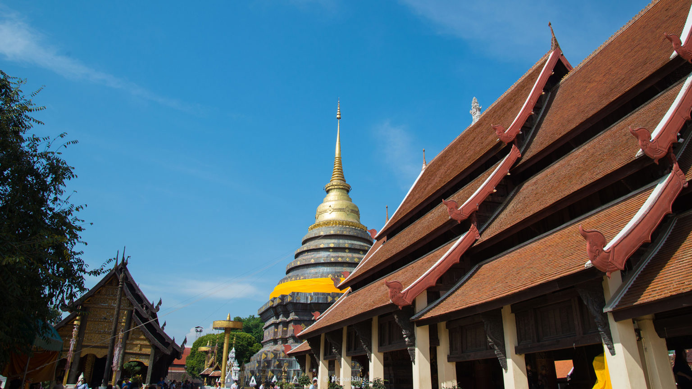

History Info
Wat Phrathat is a Lanna-style Buddhist temple in Lampang in Lampang Province, Thailand. It was built in the 15th century and located in the northern city of Lampang about 15 kilometers away. It is one of the best maintained temple that show the early Lanna architect and artifacts that show the culture within that age. The temple is said to enshrine a relic of the Buddha. Such relics are typically bones and ashes believed to be gathered after the Buddha's cremation. The relic is installed in the main chedi of the temple.
Wat Phra That Lampang Luang was founded in the 15th century. There is also a myth about the earlier beginnings of the temple, when the northern territories of present-day Thailand were called the Hariphunchai Kingdom.

🌟 Highlights
- Most of the temple’s structures are made entirely of teak and local hardwood, showcasing the delicate craftsmanship of ancient Lanna artisans.
- The gables, doors, and windows are decorated with fine wood carvings depicting lotus patterns, guardian creatures, and Buddhist symbols
- The interior pillars are covered in gold lacquer, creating a sacred and graceful atmosphere
- These detailed decorations show the deep devotion and artistic mastery of Lanna craftsmen
- The principal vihara dates back to the 15th century and reflects the open-hall design typical of Lanna temples. It has three tiered roofs covered with traditional wooden shingles and is supported by tall wooden columns. The open sided layout allows both monks and laypeople to join ceremonies from inside or outside, creating a harmonious and communal

information For tourists
📍 Location BanPhraBa ' wat Phrathat Phraba ' Ko ka ' Lampang
⏰ Open and Close: 06:00 - 18:00 น.
💰 Price: Free (Or Donate)
🚗 Travel: Drive from the main town to west about 18 Km.
👗 Outfits: Dress Politly Do not be Sexy Respect the temple
gallery